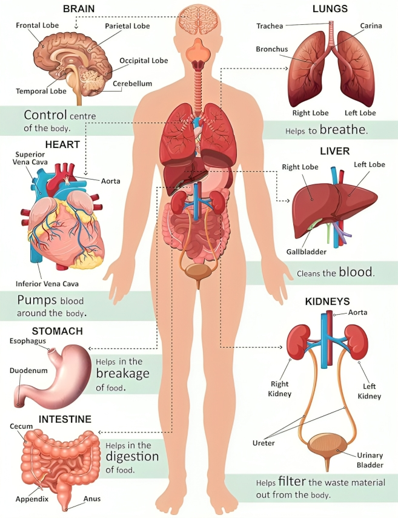

INTERACTIVE ANATOMY
Explore the Human Body
Discover organs, bones, muscles and body systems through labeled anatomy diagrams and simple explanations.
Start Exploring ↓
Choose a body system to begin
OVERVIEW
Human body at a glance
Every card opens an interactive learning panel with important structures and functions.
EXPLORE BY SYSTEM
Click a body system
LEARNING TOOL
Learn anatomy visually
Choose a system, open its diagram, then select a labeled structure to learn what it does and where it fits in the body.
01Choose a system
02Open the diagram
03Explore structures